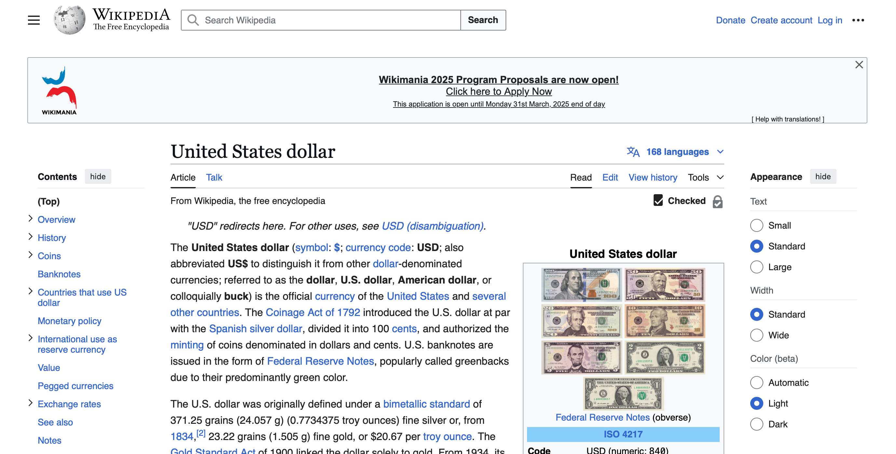

EPPS 6302-Data Collection & Production | Assignment 03
Automating Economic Data Extraction: Scraping Foreign Reserves, Dollar Tables, and Government Documents
Extracting Foreign Reserve Data, U.S. Dollar Table, and Downloading Government Documents.
Automating Web Scraping for Economic and Government Data
This assignment explores web scraping techniques using rvest in R to extract structured data from Wikipedia and government databases. The study is divided into three main sections:
Scraping Foreign Reserve Data - Extracting global foreign exchange reserves from Wikipedia, cleaning the data, and formatting it for analysis.
Scraping U.S. Dollar Table - Extracting U.S. dollar banknote details from Wikipedia, removing unnecessary columns, and restructuring the data.
Downloading Government Documents - Automating the retrieval of Congressional bills related to “water” from the govinfo.gov website.
1. Scraping Foreign Reserve Data
Reading the Wikipedia Page using the rvest package
The script first loads the required libraries and defines the Wikipedia URL for foreign exchange reserves. Using XPath selectors, the script extracts the first table from the Wikipedia page. The dataset is cleaned by renaming columns, filtering missing values, and converting foreign reserves into currency format.
# Load required librarieslibrary(tidyverse)
── Attaching core tidyverse packages ──────────────────────── tidyverse 2.0.0 ──
✔ dplyr 1.1.4 ✔ readr 2.1.5
✔ forcats 1.0.0 ✔ stringr 1.5.1
✔ ggplot2 3.5.1 ✔ tibble 3.2.1
✔ lubridate 1.9.4 ✔ tidyr 1.3.1
✔ purrr 1.0.4
── Conflicts ────────────────────────────────────────── tidyverse_conflicts() ──
✖ dplyr::filter() masks stats::filter()
✖ dplyr::lag() masks stats::lag()
ℹ Use the conflicted package (<http://conflicted.r-lib.org/>) to force all conflicts to become errors
library(rvest)
Attaching package: 'rvest'
The following object is masked from 'package:readr':
guess_encoding
library(scales) # For currency formatting
Attaching package: 'scales'
The following object is masked from 'package:purrr':
discard
The following object is masked from 'package:readr':
col_factor
# Define the URLurl <-'https://en.wikipedia.org/wiki/List_of_countries_by_foreign-exchange_reserves'# Read the webpagewikiforreserve <-read_html(url)# Extract the first table on the page using XPathforeignreserve <- wikiforreserve %>%html_nodes(xpath ='//*[@id="mw-content-text"]/div[1]/table[1]') %>%html_table(fill =TRUE)# Extract the data framefores <- foreignreserve[[1]]# Rename columns for consistencycolnames(fores) <-c("Country", "Continent", "Subregion", "Forexreswithgold", "Date1", "Change1", "Forexreswithoutgold", "Date2", "Change2", "Sources")# Clean up variables:# Remove any rows where "Country" is missingfores <- fores %>%filter(!is.na(Country) & Country !="")# Clean up "Forexreswithgold" and "Forexreswithoutgold" columnsfores$Forexreswithgold <-as.numeric(gsub(",", "", fores$Forexreswithgold))
# Convert "Date1" and "Date2" to Date formatfores$Date1 <-as.Date(fores$Date1, format ="%d %b %Y")fores$Date2 <-as.Date(fores$Date2, format ="%d %b %Y")# Format as currencyfores$Forexreswithgold <-dollar(fores$Forexreswithgold)fores$Forexreswithoutgold <-dollar(fores$Forexreswithoutgold)# View the cleaned and formatted datahead(fores)
# A tibble: 6 × 10
Country Continent Subregion Forexreswithgold Date1 Change1
<chr> <chr> <chr> <chr> <date> <chr>
1 Country and region(as… Continent Sub-regi… <NA> NA Change
2 China Asia East Asia $3,571,803 2024-10-31 21,957
3 Japan Asia East Asia $1,238,950 2024-11-01 15,948
4 Switzerland Europe Western … $952,687 2024-09-30 1,127
5 India Asia South As… $639,593 2025-03-21 30,165
6 Russia Europe Eastern … $620,800 2024-11-08 11,900
# ℹ 4 more variables: Forexreswithoutgold <chr>, Date2 <date>, Change2 <chr>,
# Sources <chr>
2. Scraping U.S. Dollar Table
This section extracts a table from the Wikipedia page on U.S. currency, removing unnecessary image columns.

Figure: Wikipedia Page on the U.S. Dollar – The Wikipedia entry for the United States dollar (USD), detailing its history, value, and international use. The right panel displays various denominations of U.S. banknotes.
Reading the U.S. Dollar Wikipedia Page
The script extracts the third table using XPath and removes unnecessary columns. This cleaned dataset helps track changes in U.S. banknotes over time.
# Load required librarieslibrary(tidyverse)library(rvest)# Define the URLurl <-'https://en.wikipedia.org/wiki/United_States_dollar'# Read the webpageusd_page <-read_html(url)# Extract the third table on the page using XPath (skipping image columns 2 and 3)usd_table <- usd_page %>%html_nodes(xpath ='//*[@id="mw-content-text"]/div[1]/table[3]') %>%html_table(fill =TRUE)# Extract the data frameusd_data <- usd_table[[1]]# Remove columns 2 and 3 (image columns)usd_data <- usd_data %>%select(-`Front`, -`Reverse`)# Rename columns for claritycolnames(usd_data) <-c("Denomination", "Portrait", "Reverse_Motif", "First_Series", "Latest_Series", "Circulation")# Clean up the data (if necessary)usd_data <- usd_data %>%filter(!is.na(Denomination) & Denomination !="") # Remove empty rows# View the cleaned and structured datahead(usd_data)
# A tibble: 6 × 6
Denomination Portrait Reverse_Motif First_Series Latest_Series Circulation
<chr> <chr> <chr> <chr> <chr> <chr>
1 One dollar George Wa… Great Seal o… Series 1963… Series 2021[… Wide
2 Two dollars Thomas Je… Declaration … Series 1976 Series 2017A Limited[48]
3 Five dollars Abraham L… Lincoln Memo… Series 2006 Series 2021[… Wide
4 Ten dollars Alexander… Treasury Bui… Series 2004A Series 2017A Wide
5 Twenty dollars Andrew Ja… White House Series 2004 Series 2017A Wide
6 Fifty dollars Ulysses S… United State… Series 2004 Series 2017A Wide
3. Downloading Government Documents
This section automates the bulk download of government bills related to water policy using “https://www.govinfo.gov/app/search/”.
Figure: GovInfo Search Portal – The homepage of GovInfo, a U.S. government website for accessing official documents. Users can search for records using the search bar or browse by category, date, committee, or author.
Reading the Government Search Results
The script downloads 10 Congressional bills using a loop with error handling.
library(purrr)library(magrittr)
Attaching package: 'magrittr'
The following object is masked from 'package:purrr':
set_names
The following object is masked from 'package:tidyr':
extract
library(rjson)library(jsonlite)
Attaching package: 'jsonlite'
The following objects are masked from 'package:rjson':
fromJSON, toJSON
The following object is masked from 'package:purrr':
flatten
library(data.table)
Attaching package: 'data.table'
The following objects are masked from 'package:lubridate':
hour, isoweek, mday, minute, month, quarter, second, wday, week,
yday, year
The following objects are masked from 'package:dplyr':
between, first, last
The following object is masked from 'package:purrr':
transpose
library(readr)setwd("/Users/olivermyers/MyWebsite/govtdata.assignent04")# csv downloaed from https://www.govinfo.gov/app/search/ and searching "water", filtering congressonal bills from 2024# Read the CSV file without skipping rowsgovfiles <-read.csv(file ="/Users/olivermyers/MyWebsite/govinfo-search-results.csv", skip =2, header =FALSE)colnames(govfiles) <- govfiles[1, ]govfiles <- govfiles[-1, ]rownames(govfiles) <-NULLcolnames(govfiles) <-make.names(colnames(govfiles), unique =TRUE)head(govfiles$packageId)
# Preparing for bulk download of government documentsgovfiles$id <- govfiles$packageIdpdf_govfiles_url <- govfiles$pdfLinkpdf_govfiles_id <- govfiles$id# saving files into govdata.assignent04 foldersave_dir <-"/Users/olivermyers/MyWebsite/govtdata.assignent04"# Function to download pdfsdownload_govfiles_pdf <-function(url, id) {tryCatch({# Ensure the file path includes a proper separator destfile <-file.path(save_dir, paste0("govfiles_", id, ".pdf"))download.file(url, destfile = destfile, mode ="wb") # Binary filesSys.sleep(runif(1, 1, 3)) # Random sleep to avoid server throttlingreturn(paste("Successfully downloaded:", url)) },error =function(e) {return(paste("Failed to download:", url)) })}## Download the first 10 from the csv filestart.time <-Sys.time()message("Starting downloads")
Starting downloads
results <-1:10%>%# Change to limit to the first 10 files purrr::map_chr(~download_govfiles_pdf(pdf_govfiles_url[.], pdf_govfiles_id[.]))message("Finished downloads")
# List and print all files in the directoryall_files <-list.files(path = save_dir, full.names =FALSE) print("Files in the govtdata.assignent04 directory:")
[1] "Files in the govtdata.assignent04 directory:"
Simple report on difficulties encountered in the scraping process:
Scraping data using the first method, rvest, was initially a bit challenging for me. The need to inspect elements on the webpage and copy the XPath IDs to make the code work was a new concept. Additionally, some parts of the code were not as straightforward compared to the second method. That said, I found rvest to be significantly more useful in the long run because it allows for automated web scraping of large amounts of data from various webpage elements. Once I became familiar with the process, I appreciated the potential for efficiently formatting and organizing scraped data, even if it was tricky to set up at first.
The second method, on the other hand, was easier to use but felt less practical. This approach requires manually finding and downloading the necessary list yourself, which limits its automation capabilities. Initially, I encountered issues with downloading the files into the correct folder, but after consulting ChatGPT, I resolved the problem and successfully downloaded the files to the appropriate directory.
In conclusion, both methods have their advantages and can produce highly usable data. However, in my personal opinion, the rvest method stands out for its versatility and ability to scrape and format large-scale data efficiently. Although it requires more time and effort to understand and implement correctly, its potential for automating repetitive scraping tasks makes it the more valuable option overall. This could then be improved with more automation and cleaning steps build into the flow when using rvest.